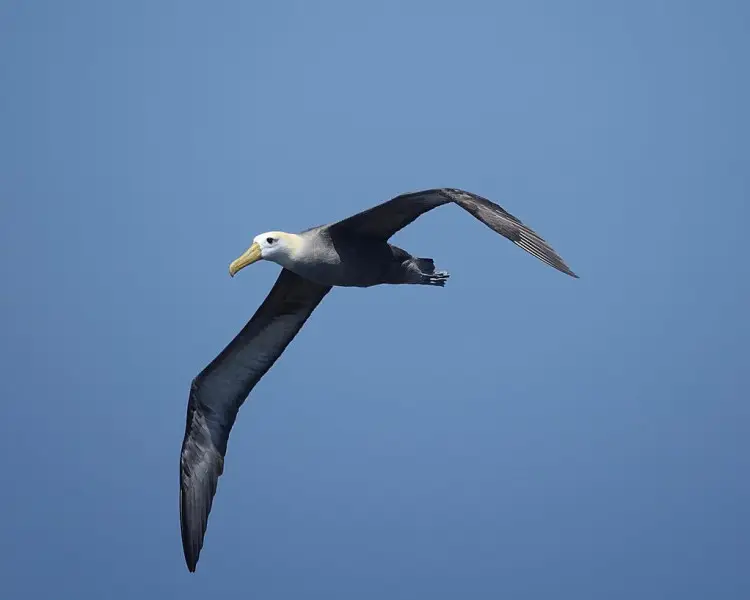
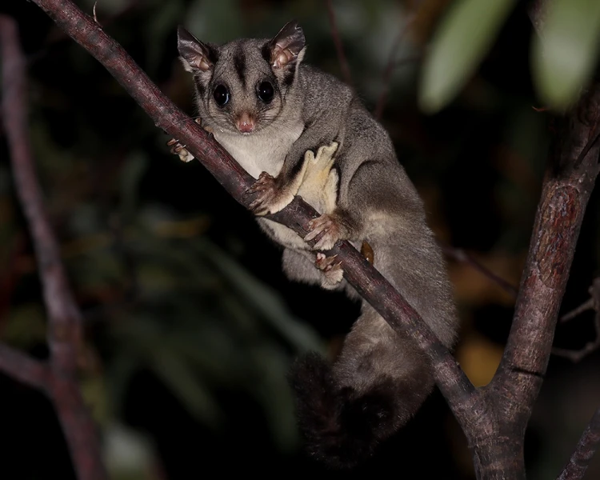

Waved Albatross
Waved Albatross Albatrosses are among the largest flying birds. They are super efficient in the air and travel long distances with two techniques - dynamic soaring and slope soaring. Dynamic soaring involves repeatedly rising into the wind and descending downwind, thus gaining energy from the vertical wind gradient. This maneuver allows the bird to cover almost 1,000 km/d (620 mi/d) without flapping its wings. Slope soaring uses the rising air on the windward

Sugar Glider
The Sugar glider is a small nocturnal gliding possum. as its name implies, this animal favors sugary foods such as sap and nectar and is able to glide through the air, much like a flying squirrel. The Sugar glider has a pair of gliding membranes, known as patagia, which extend from its forelegs to its hind legs. When the legs are stretched out, this membrane allows the animal to glide a considerable distance. It typically glides in order to